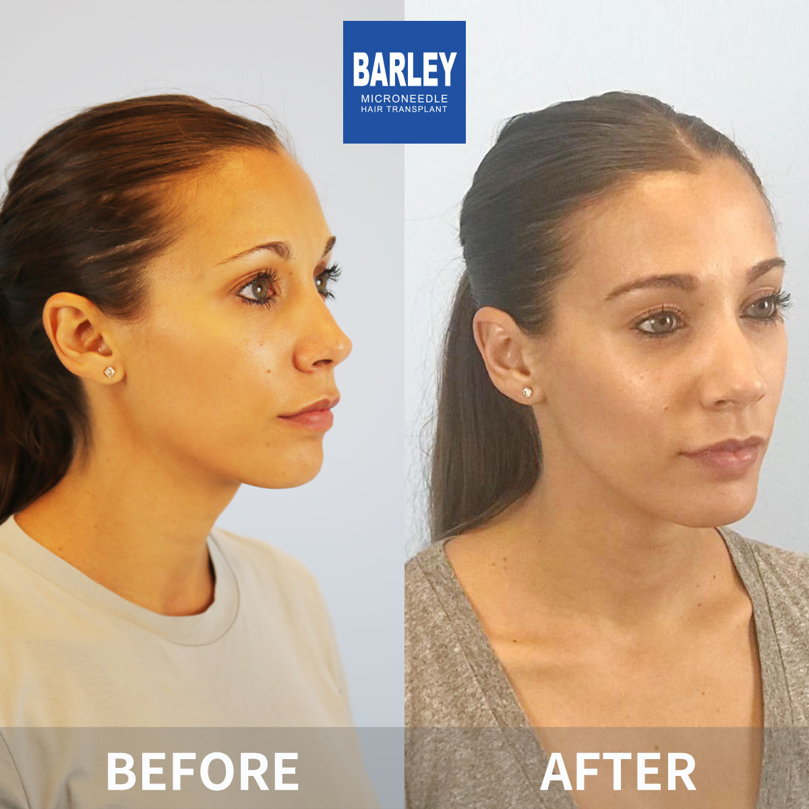
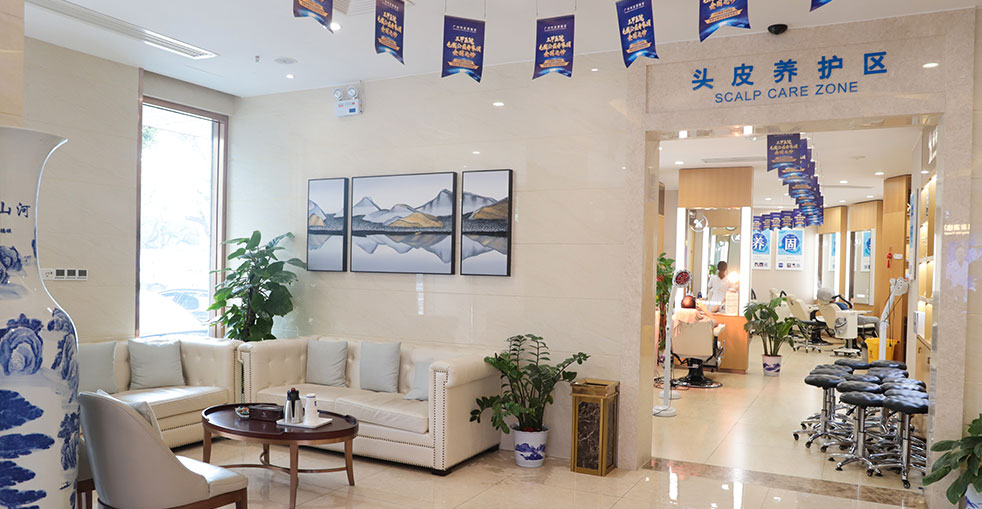

毛囊單位移植，結合大麦的現代改良技術

毛囊單位移植（FUT）是涉及條狀摘取的傳統方法。雖然大麦主要推薦先進的FUE技術，但我們仍然為特定情況提供FUT，因為它可能是正確的選擇。我們的外科醫生已經完善了FUT技術，運用精煉的技術來最小化疤痕並最大化效果。我們始終會根據您的個人情況建議哪種方法最好。
了解這種傳統技術的工作原理
大麦精煉的最小疤痕方法
傳統技術，結合大麦專業知識
為您的案例誠實建議FUT或FUE
細緻的條狀組織摘取，最小創傷
在顯微鏡下精確分離毛囊單位
仔細規劃受體區域以獲得自然效果
與我們的FUE手術相同的細緻護理
專門護理以優化供體區域癒合
業界領導者，效果有證明
自2006年以來一直是微針植髮技術的先驅和領導者
遍佈中國主要城市，均具有相同的高標準
創新的微針和種植筆技術，獲得優異效果
受到全球患者信賴，帶來改變人生的效果
為國際患者提供全程英文支持
先進設施和嚴格的安全協議，讓您安心
看看我們患者實現的驚人轉變



與我們滿意患者的珍貴時刻

成功手術後與我們醫療團隊合影

與我們的醫生一起慶祝絕佳效果

另一位滿意的患者分享喜悅

患者出院前與我們專家合影

開心的患者與陳醫生治療後合影

興奮的患者展示他們的新造型
聽聽全球各地滿意患者的分享
"我需要很多移植體！FUT條狀摘取非常適合獲得最大產量！我的疤痕癒合得很好，留長髮很容易遮蓋！"
"條狀摘取提供了優異的移植體存活率！高密度效果看起來完全自然！我對我的選擇非常滿意！"
"我在Bing上徹底研究了FUT vs FUE！FUT在更短時間內提供了更多移植體！我的疤痕癒合得很好，密度完美！"
"大麦的先進縫合技術讓我的疤痕幾乎看不見！沒有人能看出我做過植髮！效果太驚人了！"
"我的禿髮相當嚴重！FUT條狀摘取給了我需要的所有移植體！完全覆蓋，看起來非常自然！"
"大麦的FUT技術非常精煉！優異的移植體品質，最小創傷，效果太棒了！我很高興選擇了這個！"
體驗我們現代舒適的設施

我們的先進設施

在我們的高級休息室放鬆

無菌且先進

私密且專業

舒適的術後空間

溫馨的入口
找到關於植髮手術常見問題的答案
聯絡我們預約免費諮詢
15810155700
+86 13730143529
hairtransplant@qq.com